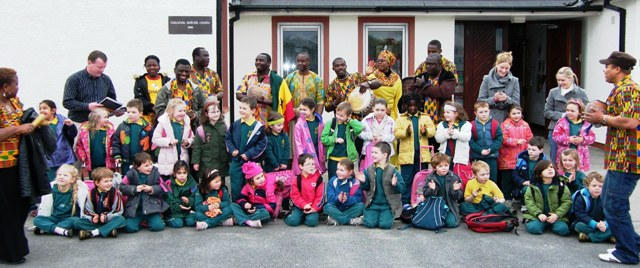

SCHOOL OUTREACH PROGRAM
The Ghana Ireland Friendship Association (GIFA) is committed to the integration of Ghanaians into the mainstream Irish society and vice versa. As a result, GIFA has developed an action plan, to visit various schools within the Republic of Ireland. The objective is to create awareness about the rich Ghanaian culture and traditions and at the same time to find the means of interacting with the Irish society.
The first of this visit brought GIFA to John the Baptist Community School, at Hospital in County Limerick. Ten representatives from GIFA visited the aforementioned school and interacted with about 55 transition year students and teachers. The transition year students have taken up a year-long project, which is focused on fair trade in Ghana. GIFA's visit was to expose the students to, the Ghanaian culture, economic environment as well as struggles facing the cocoa farmers, among others. Consequently, GIFA developed an hour and half programme which was delivered to the school.

The programme began with a presentation focused on Life in Ghana and followed by questions and answers and finally drumming/dancing session. There was also a display of Ghana artefacts to demonstrate the rich Ghanaian culture and traditions. To enable GIFA to improve on the quality of delivery the association has developed a feedback in the form of questionnaire to evaluate every school visit. The aim is to ascertain information from students, which will serve as a guideline in meeting the needs of their prospective audience. Out of the total of 55 students, 45 responded to the questionnaire. 90% of those who responded said they enjoyed the drumming and the dancing. In addition, most of the respondents expressed their delight by mentioning the desire to visit Ghana in the near future. Furthermore, the school intends to raise funds to assist educational institutions in the Northern part of Ghana.